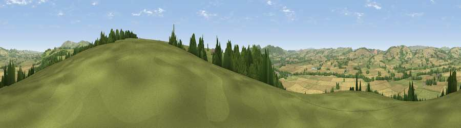

Viewpoint near Stanton Lacy
#9485 in England · top 24% of its area beats it · near Stanton LacyWhere it is
The exact computed spot (SO 50975 80350). Click the marker for map links.
The view, rendered

A 360° render of this exact spot computed from the terrain model, tree cover and land cover — summer colours, afternoon light, calibrated against photographs of famous viewpoints. Real trees, hedges and buildings will differ in detail.
The panorama
Grey silhouette: terrain skyline in each direction (720 bearings, Earth curvature and refraction included). Dashed green: skyline with trees (+15 m) and buildings (+8 m) as obstacles. Blue strip: how far the ground is visible on each bearing.
Where the view opens
Wedge length = distance to the farthest visible ground on that bearing (vegetation-aware). Rings at 10, 25 and 50 km.
What fills the view
38% grassland · 38% cropland · 24% woodland
Angular shares of the visible panorama (visual magnitude), not map area. Landscape diversity 0.48 (0–1 Shannon).
Key numbers
More beautiful places nearby
The staircase of upgrades: each row has a higher view potential than everything closer. Driving times are estimates from straight-line distance, calibrated against real road routing — check an actual route before setting out.
| Place | Direction | Drive | Score |
|---|---|---|---|
| Viewpoint near Stoke St Milborough | ENE · 5 km | ~11 min | 70.1 |
| Viewpoint near Halford | NW · 7 km | ~14 min | 74.0 |
| Viewpoint near Halford | NW · 7 km | ~14 min | 76.2 |
| Bringewood Hill | SSW · 8 km | ~16 min | 82.2 |
| Titterstone Clee | ESE · 9 km | ~17 min | 83.8 |
| The Lawley | N · 17 km | ~30 min | 85.8 |
| Viewpoint near Little Wenlock | NNE · 30 km | ~47 min | 86.6 |
| North Hill | SE · 43 km | ~63 min | 86.8 |
52.41893, -2.72228 · source: screening · position refined by local search. Computed location — check access rights before visiting.